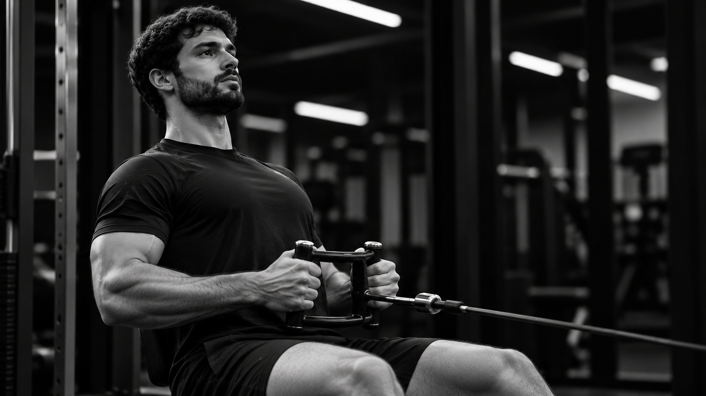

A sua plataforma completa para encontrar os melhores exercícios, gerar rotinas de treino e alcançar seus objetivos físicos.

A HEADPFIT é uma plataforma criada para facilitar o acesso a informações sobre exercícios físicos. Nosso objetivo é ajudar você a conhecer melhor os exercícios e os grupos musculares. Aqui você encontra um catálogo de exercícios apresentados com imagens, títulos e descrições. Utilize os filtros para encontrar facilmente o exercício que procura. Explore diferentes opções para conhecer novas possibilidades de treinamento. A plataforma possui uma interface simples e intuitiva. Seu conteúdo foi organizado para facilitar a consulta durante sua rotina fitness. Seja para conhecer um novo exercício ou ampliar seus conhecimentos, explore a HEADPFIT. HEADPFIT: conheça os exercícios e construa sua evolução!